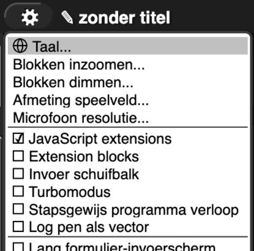

Designs maken
In dit project ga je leren hoe je dikke lijnen (met ronde of rechte eindes) kan gebruiken om je eigen designs te maken.


-

Dit bestand bevat vijf scripts.- Het Script 1 is alleen om schoon te maken.
- Experimenteer met de andere scripts om te zien wat ze doen. Hieronder staan wat ideeën
- SCRIPT 2
- Maak het scherm leeg en zet de pen neer, probeer dit script uit en beschrijf het resultaat.
- Maak het scherm weer leeg, verander de 100 stappen naar 0.5 stap en beschrijf het resultaat.
- Klik op het √-teken om
rechte lijneindesuit te zetten. Probeer dan de eerste twee experimenten opnieuw.
- SCRIPT 3
- Klik om te zien wat
tunneldoet. - Pas
tunnelaan om te zien hoe het werkt. - Kies andere nummers als invoer voor
tunnel. Pas er maar een of twee tegelijkertijd aan om te zien wat ze precies doen.
- Klik om te zien wat
- SCRIPT 4
- Denk na over wat de
forlus verandert. - Wat doen
maak pengrootte (i × 50)enneem (i × 50) stappensamen? - Wat doet het blok hierna,
neem (i × -50) stappen?
- Denk na over wat de
- SCRIPT 5
- Experimenteer met minder stappen.
- Wat gebeurt er als je rechte lijneindes aanzet?
- Wijzig het
bol-blok om te zien hoe het werkt.
IDEEËN VOOR EXPERIMENTEN. Gebruik er zoveel als je wil. - Zoek nu een mooi design-voorbeeld of maak een eigen ontwerp. Sla je ontwerpen op en kies je meest geslaagde werk om te delen.
Deze code maakt gebruik van iets in Snap! dat je niet eerder hebt gezien:
 .
Als je het wil gebruiken voor andere projecten kan je het inladen via het Bestand-menu 'Bibliotheken'
en daarna 'Getters and setters', zoals hieronder. Hierna selecteer je het blok
.
Als je het wil gebruiken voor andere projecten kan je het inladen via het Bestand-menu 'Bibliotheken'
en daarna 'Getters and setters', zoals hieronder. Hierna selecteer je het blok


set_flag .. to
.., klik dan op het eerste invoerveld en selecteer de tekst 'Flat line ends', door op het
tweede invoerveld te klikken krijg je nu rechte lijneindes.

Vink de checkbox 'JavaScript extensions' aan.
Te vinden onder het tandwiel icoon.
Te vinden onder het tandwiel icoon.